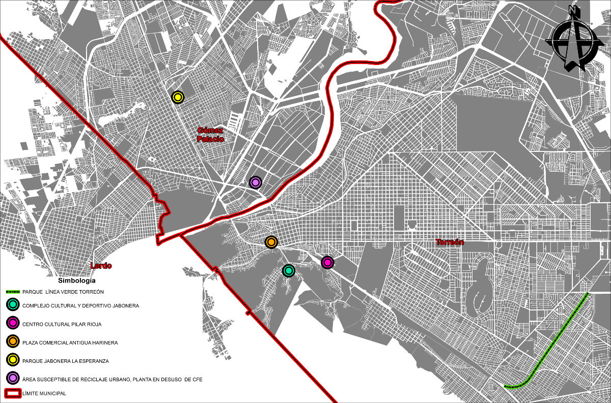

Fábricas abandonadas, vías del tren en desuso, estaciones ferroviarias, galpones entre otros, son espacios que guardan tesoros arquitectónicos, que por lo general se encuentran ubicados en zonas estratégicas y que pueden ser utilizados en beneficio de la población.
A lo anterior se le conoce como "reciclaje urbano" y no es un concepto nuevo en la región lagunera. Algunos ejemplos son: el Complejo Cultural y Deportivo La Jabonera, la Línea Verde, el Centro de Iniciación Artística Pilar Rioja (CINART), el Centro Comercial Antigua Harinera y en Gómez Palacio el Parque Jabonera La Esperanza.
En el norte de México uno de los ejemplos más exitosos de reciclaje urbano es el Parque Fundidora. Sin embargo, en la Laguna aún se plantea el reto de la exploración de las ciudades para ubicar edificaciones en desuso que cuenten parte de la historia de la ciudad, de la misma manera es necesario ubicar vacíos urbanos generados por lo que algún día tuvo utilidad y que en la actualidad resultan obsoletos.
Se trata de signos de un pasado que aúnan diferentes periodos de la historia y que la construyen de diferentes momentos, históricos, sociales, culturales, económicos e industriales que le ha tocado vivir a la ciudad.
Son bienes patrimoniales que tienen el gran valor de que son reconocidos por todos, es el caso del Centro de Iniciación Artística Pilar Rioja, que todavía es llamado por algunas personas como "antigua estación del ferrocarril" y en su estructura hay signos de su pasado y su importancia histórica.
En los espacios abandonados lo que está degradado es su valor económico de acuerdo al grado de deterioro físico, pero por otra parte su valor histórico anclado al nombre está intacto. Los recursos sólo hay que invertirlos en darle una utilidad y no de instalar el nombre en el mercado, ya pertenecen al imaginario colectivo de la una población.
Ejemplos en la laguna
El Complejo Cultural y Deportivo Antigua Jabonera La Unión, ubicado entre las colonias la Primera y Segunda Rinconada en el poniente de la ciudad de Torreón, impactó de una forma positiva a la población de este sector que anteriormente estaba afectada por la incidencia delictiva.
Línea Verde de Torreón, ubicada en el oriente de la ciudad en el derecho de vía del ferrocarril en desuso, se había convertido en un basurero y foco de infecciones causadas por la fauna nociva, también representaba un borde físico que desconectaba y causaba inseguridad entre los habitantes de la zona.
El Centro Comercial Antigua Harinera ubicado en el poniente de la ciudad, alberga a los llamado "fierreros" que anteriormente se encontraban en la vía publica en calles aledañas del mercado Alianza.
El Centro de Iniciación Artística Pilar Rioja ubicado al sur de la ciudad, en lo que fuera la estación de ferrocarril, hoy es un centro que ofrece talleres artísticos a la población, cuenta con salones de danza, música y alberga al Teatro Salvador Novo.
En Gómez Palacio se encuentra el Parque Jabonera La Esperanza, que también es un caso de éxito del reciclaje urbano, donde actualmente se construye un parque temático y se alberga el museo El Acertijo.
Otra zona susceptible de reciclaje urbano en Gómez Palacio es la planta generadora de electricidad "Central La Laguna" que está en desuso y su ubicación es ideal para la implementación de equipamientos urbanos, áreas de recreación y deporte.
Otros casos
El objetivo del reciclaje urbano es recuperar las herencias urbanísticas para los ciudadanos y sumarlas al espacio público, equilibrando la transformación de una zona o de un bien patrimonial histórico entre los desarrollos inmobiliarios y los intereses de los residentes. El desafío está en cómo recuperar esa herencia urbanística para la gente, parte de la respuesta a este desafío es lo que dicen los ciudadanos que se encuentran alrededor de esos espacios.
Es importante buscar y conocer a través de la propia comunidad cuales son los espacios urbanos y el patrimonio arquitectónico importante que permiten contar la historia de un lugar y a partir de allí ponerlos en valor.
Otras ciudades del país y del mundo han enfocado su atención en esta posibilidad del reciclaje urbano, logrando grandes resultados al convertir zonas degradadas en nuevos barrios con gran potencial y desarrollo que se convierten en un nuevo punto de interés para los habitantes y turistas de la ciudad.
Algunos proyectos realizados en el mundo son High Line en Nueva York, Rio Turia en Valencia y 22@ en Barcelona.
Importancia
Existe un gran número de inmuebles abandonados y vacíos urbanos con un elevado potencial, donde se tienen resueltas las necesidades de servicios, vialidades, equipamientos.
Con esto se pueden aminorar los desplazamientos que causan tráfico y contaminación, la disminución del crecimiento desmedido que daña a la ciudad al generar divisiones sociales y económicas entre los habitantes.

Espacios recuperados
- Línea Verde de Torreón
- Beneficia a más de 30 mil familias
- Cuenta con 5 Km de ciclo vía
- 5 Km de andadores peatonales
- 15 estaciones de gimnasios al aire libre
- 9 canchas de usos múltiples
- 1 Skatepark
- 10 vagones de ferrocarril que funcionan como espacios culturales
- Centro Cultural y Deportivo "La Jabonera"
- Este centro brinda a los habitantes del poniente de la ciudad un espacio de convivencia y recreación
- Cuenta con un complejo deportivo
- Casa de la Cultura
- Alberca semi-olímpica e infantil
- Beneficia a más de 40 mil personas de 21 colonias del poniente de Torreón
Este análisis fue publicado en Milenio Laguna
Reciclaje Urbano: ejemplo de recuperación de la herencia histórica